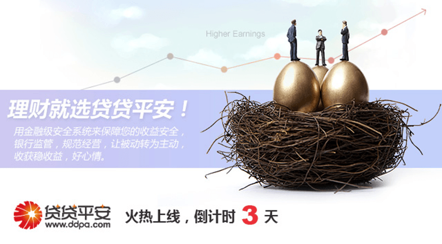

我们一直在寻找，寻找最合适的投资理财渠道，如今，看看股市，看看“宝宝们”，你还认为它们是最适合您的理财渠道么？
“股民都去哪儿了，还没好好看看市值就蒸发了。一亏再亏，又一年，满脑子都是后悔进入股海，股民都去哪儿了……”对于股市，投资者的信心一再受到打击，作为散户，亏钱不论牛熊，赚钱需要奇迹。这是一种被动的理财渠道。
5月11日，余某宝的七天年化收益率破5了，市场流动性的宽松，货币市场的利率下行，四大银行公开表示不接受“宝宝们”的协议存款，购买、赎回政策的调整更令“宝宝们”再受打击，此时的它破5了，担忧的是破4也只是时间问题。这也是一种非常被动的理财渠道。
贷贷平安不是上帝之手，我们不能让您一夜暴富，但是我们能保证让您的财富快速增值，收益秒杀“宝宝们”，用金融级安全系统来保障您的收益安全，银行监管，规范经营，让您不再为股市的跌涨而烦忧，不再为宝宝们跑不赢通胀而伤神。让被动转为主动，收获稳收益好心情。